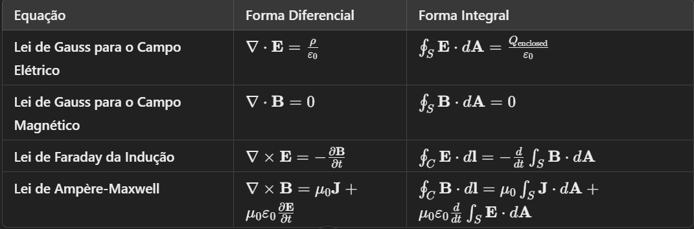

FÍSICA
MECÂNICA
1. Conceitos Fundamentais
- Sistema de Referência
- Grandezas Físicas
- Posição:local onde um corpo se encontra.
- Deslocamento:variação da posição de um corpo, é um vetor.
- Velocidade escalar: módulo da velocidade.
- Velocidade vetorial: inclui direção e sentido.
- Aceleração constante:Quando a velocidade varia de forma uniforme.
- A fórmula da conservação da energia mecânica é tal que a soma da energia cinética com a energia potencial seja igual para quaisquer pontos de um sistema mecânico em que não atuem forças dissipativas.
Eci + Epi = Ecf + Epf
Eci e Ecf = energia cinética final e inicial
Eci e Epf = energia cinética final e inicial
6. Aplicações da Mecânica
A Mecânica tem diversas aplicações práticas:
Engenharia:Projetar estruturas e máquinas.
Transporte: Entender a dinâmica de veículos.
Astronomia:Estudar o movimento dos corpos celestes.
ONDULATÓRIA
A ondulatória é um ramo da Física que se ocupa do estudo das ondas e oscilações. Ondas são perturbações que transportam energia através de um meio (como ar ou água) ou até mesmo no vácuo. Elas não movem as partículas permanentemente, mas fazem com que elas oscilem.
1.Tipos de ondas
Ondas Mecânicas: Precisam de um meio para se propagar. Exemplos incluem:
- Som:Propaga-se pelo ar, água ou sólidos.
- Ondas na água:Como as ondas do mar.
- Luz:O que vemos no dia a dia.
- Raios-X e micro-ondas.
- Amplitude(A):A altura da onda. Maior amplitude significa mais energia.
- Comprimento de onda (λ):A distância entre duas cristas (pontos altos) ou vales (pontos baixos) consecutivos.
- Frequência (f):O número de ondas que passam por um ponto em um segundo, medido em hertz (Hz). Quanto maior a frequência, mais alta a nota do som.
- Período (T):O tempo que uma onda leva para completar um ciclo. T= 1/F
- Velocidade (v):A rapidez com que a onda se move. V = f.λ
- Transversais:As partículas se movem perpendicularmente à direção da onda. Exemplo: ondas na água.
- Longitudinais:As partículas se movem na mesma direção da onda. Exemplo: ondas sonoras.
- Refletir:Como um eco do som.
- Refratar:Mudança de direção ao passar de um meio para outro (ex: lápis em um copo de água parece quebrado).
- Difratar:Espalhar-se ao passar por uma fenda ou ao contornar um objeto.
- Interferir:Quando duas ondas se encontram, elas podem se somar (interferência construtiva) ou se cancelar (interferência destrutiva).
- Frequência:Determina o tom do som (mais alta = som mais agudo).
- Amplitude:Determina a intensidade do som (mais alta = som mais forte).
Definição:
Temperatura é uma grandeza física que mede o grau de agitação das partículas de um corpo. Quanto maior a temperatura, maior é a energia cinética média das partículas.Escalas Termométricas:
Existem três principais escalas termométricas:- Celsius (°C):Usada na maioria dos países para medir a temperatura do ambiente e de processos cotidianos.Essa escala Celsius, também chamada de escala centígrada, é baseada nos pontos de congelamento e ebulição da água a pressão atmosférica padrão (1 atm). Ela define:
0°C como o ponto de congelamento da água.
100°C como o ponto de ebulição da água. - Fahrenheit (°F):A escala Fahrenheit é usada principalmente nos Estados Unidos e alguns países do Caribe. Nessa escala:
32°F é o ponto de congelamento da água.
212°Fé o ponto de ebulição da água. - Kelvin (K):A escala Kelvin é uma escala termodinâmica absoluta usada principalmente em contextos científicos ( usada no Sistema Internacional de Unidades (SI)). Ela é baseada no zero absoluto, a temperatura mais baixa possível, onde as partículas teriam energia mínima. Nessa escala:
0 K é o zero absoluto (-273,15°C), ponto em que toda a agitação térmica das partículas cessa.
A variação de 1 K é equivalente a uma variação de 1°C, mas a escala Kelvin não usa graus, apenas a unidade "K". - °C=5/9(°F−32)
- °F=9/5°C+32
- K=°C+273.15
Definição:
Calor é a energia térmica em trânsito de um corpo para outro em virtude da diferença de temperatura entre eles.Unidades de Medida do Calor:
A unidade de medida do calor no Sistema Internacional é o joule (J), mas é comum utilizar também a caloria (cal), sendo: 1cal=4,18JCapacidade Térmica e Calor Específico:
- Capacidade térmica (C):Quantidade de calor necessária para variar a temperatura de um corpo em 1°c.C=Q/ΔT.
- Calor específico (c):Quantidade de calor necessária para variar a temperatura de 1g de uma substância em 1°C.Q=m⋅c⋅ΔT
Formas de Transferência de Calor
Dilatação Linear
Dilatação Superficial
Dilatação Volumétrica
Primeira Lei da Termodinâmica
Segunda Lei da Termodinâmica
Terceira Lei da Termodinâmica
Tipos de Mudança de Fase
Calor Latente
Calor Latente de Fusão (Lf)
Calor Latente de Vaporização (Lv)
- Corrente Contínua (CC): O fluxo de elétrons é unidirecional.
- Corrente Alternada (CA): O fluxo de elétrons muda de direção periodicamente.
- Potência: Taxa de consumo ou produção de energia: P=V.I
- Energia: A energia consumida em um tempo t; E=P.t
- Carga Elétrica:A propriedade física que causa a força eletromagnética. Existem duas formas de carga: positiva e negativa.
- Campo Elétrico (E):Região ao redor de uma carga elétrica onde outras cargas experimentam uma força.
- Campo Magnético (B):Região ao redor de um ímã ou de uma corrente elétrica onde outras correntes ou ímãs experimentam uma força.
- Lei de Gauss:A integral do campo elétrico sobre uma superfície fechada é proporcional à carga elétrica total Qenc dentro dessa superfície:
- Lei de Faraday: A variação do fluxo magnético ΦB ao longo do tempo gera uma força eletromotriz (fem): E= −dΦB/dt
- Lei de Lenz:A direção da corrente induzida é tal que ela se opõe à variação do fluxo magnético que a causou.
Um sistema de referência é um ponto de vista a partir do qual se observa e descreve o movimento. Pode ser um referencial inercial (que não está acelerando) ou não inercial (que está acelerando).
As grandezas podem ser classificadas em:
Escalares:possuem apenas módulo (ex: massa, temperatura).
Vetoriais:possuem módulo, direção e sentido (ex: força, velocidade).
2. Cinemática
A cinemática é o estudo do movimento dos corpos sem considerar as causas (forças) que o provocam.
Posição e Deslocamento
Exemplo: Se um carro vai de um ponto A (10 km ao sul) a um ponto B (5 km ao sul), o deslocamento é:
Deslocamento= Posição final − Posição inicial = 5km − 10km = 5km (norte).
Velocidade
A velocidade é a taxa de variação do deslocamento em relação ao tempo. Pode ser:
Exemplo: Um empurrão de 10 N faz um carrinho de brinquedo se mover. Se a massa do carrinho for 2 kg, a aceleração é:
𝑎 = 𝐹/𝑚= 10N/2kg= 5 m/s^2
Aceleração
A aceleração é a variação da velocidade em relação ao tempo. Pode ser:
Exemplo: Se a velocidade de um carro aumenta de 20 m/s para 40 m/s em 4 segundos, a aceleração é:
𝑎 = Δ𝑣/Δ𝑡= 40m/s−20m/s / 4s = 5m/s^2
3. Dinâmica
A dinâmica estuda as forças e seus efeitos sobre o movimento dos corpos.
Força
A força é uma interação que pode causar a alteração do estado de movimento de um corpo. É medida em Newtons (N).
Leis de Newton
Primeira Lei (Inércia):
Um corpo em repouso permanecerá em repouso e um corpo em movimento permanecerá em movimento a menos que uma força externa atue sobre ele.
Segunda Lei (F = ma):
Determina que se aplicarmos força sobre um objeto, ela produzirá movimento, cuja aceleração é proporcional à sua massa.
Terceira Lei (Ação e Reação):
Relaciona as forças de interação entre dois corpos. Quando um corpo A exerce uma força sobre um corpo B, este exerce uma força de mesma intensidade, mesma direção e sentido contrário sobre o corpo A. Como as forças são aplicadas sobre corpos diferentes, elas não se equilibram.
4. Energia
A energia é a capacidade de realizar trabalho.
Trabalho
O trabalho é realizado quando uma força é aplicada a um corpo e este se desloca. A fórmula do trabalho é:
W=F⋅d⋅cos(θ) onde F é a força aplicada,d é o deslocamento e θ é o ângulo entre a força e o deslocamento.
Energia Cinética
A energia cinética (Ek) é a energia de um corpo em movimento, dada por:
Ek= 1/2 mv^2 onde m é a massa e v é a velocidade do corpo.
Exemplo: Um carro de 1.000 kg viajando a 20 m/s possui energia cinética:
Ek = 1/2 mv^2 =1/2⋅1000kg⋅(20m/s)2=200.000J.
Energia Potencial
A energia potencial (Ep) é a energia armazenada devido à posição de um corpo. A energia potencial gravitacional é dada por:
Ep = m.g.h onde m é a massa, g é a aceleração da gravidade e h é a altura.
Exemplo: Um objeto de 10 kg a uma altura de 5 m tem energia potencial:
Ep = mgh = 10kg.10m/s^2.5m= 490J
5. Conservação de energia
A conservação da energia mecânica afirma que toda a energia relacionada ao movimento de um corpo é mantida constante quando não atuam sobre ele quaisquer forças dissipativas, tais como as forças de atrito e arraste.
Ondas Eletromagnéticas:Não precisam de meio e podem viajar no vácuo. Exemplos incluem:
Ondas de Matéria:São aquelas associadas aos átomos, às moléculas e às partículas subatômicas.
2.Características das ondas
3.Formulas
Fórmula do período da onda
T= 1/f
T: é o período, medido em segundos s .
f: é a frequência, medida em Hertz [Hz] .
Pode ser representada também por: T = Δt/n
T: é o período, medido em segundos s .
Δt:é a variação de tempo, medida em segundos [s] .
n: é o número de oscilações.
Fórmula da frequência da onda
f = 1/T
f: é a frequência, medida em Hertz [Hz] .
T é o período, medido em segundos s .
Pode ser representada também por: f = n/Δt
f: é a frequência, medida em Hertz [Hz] .
n: é o número de oscilações.
∆t: é a variação de tempo, medida em segundos [s] .
Fórmula da velocidade de propagação da onda
V = λ.f
V: é a velocidade de propagação da onda, medida em [m/s] .
λ: é o comprimento de onda, medido em metros [m] .
f: é a frequência, medida em Hertz [Hz] .
Pode ser representada também por: V = λ/T
V: é a velocidade de propagação da onda, medida em [m/s] .
λ: é o comprimento de onda, medido em metros [m] .
T: é o período, medido em segundos s .
Equação de Taylor (ondas em uma corda)
V = √F/m
V: é a velocidade de propagação da onda, medida em [m/s] .
F: é a intensidade da força de tração na corda, medida em Newton [N] .
m: é a massa da corda, medida em quilograma [kg] .
4.Tipos de movimento das ondas
5. Comportamento das ondas
Quando as ondas encontram obstáculos ou diferentes meios, elas podem:
6. Ondas sonoras
Como funcionam:São ondas mecânicas longitudinais. As moléculas de ar vibram e criam compressões e rarefações que viajam até nossos ouvidos.
Características:
7. Ondas eletromagnéticas
Como funcionam:Consistem em campos elétricos e magnéticos que oscilam. Exemplos incluem luz visível, micro-ondas e raios X.
Velocidade:Viajam a uma velocidade de aproximadamente 3×10^8m/s no vácuo.
8. Aplicações da ondulatória
Comunicações: Uso de ondas de rádio para transmitir informações.
Medicina: Ultrassonografia usa ondas sonoras para criar imagens do corpo.
Óptica: Lentes e dispositivos ópticos utilizam ondas de luz.
Sismologia:Estudo de ondas sísmicas para detectar e analisar terremotos.
ÓPTICA
A óptica é a parte da física que estuda a luz e seus fenômenos, como a reflexão, refração, dispersão e interferência. Ela pode ser compreendida como um caso particular da ondulatória, que estuda o comportamento das ondas de todo o espectro eletromagnético e não somente da luz visível. A óptica é dividida em três áreas: geométrica, física e ondulatória.
1. Natureza da Luz
A luz pode ser compreendida sob duas perspectivas:
Onda:A luz se comporta como uma onda eletromagnética, propagando-se através de campos elétricos e magnéticos. Isso explica fenômenos como interferência e difração.
Partícula:A luz também pode ser vista como composta por partículas chamadas fótons, que transportam energia. Isso é relevante em fenômenos como o efeito fotoelétrico.
2. Reflexão da Luz
A reflexão é o processo em que a luz incide em uma superfície e é desviada. As leis da reflexão são:
Primeira Lei:O ângulo de incidência é igual ao ângulo de reflexão.
Segunda Lei:A luz reflete em um plano que contém a normal (a linha perpendicular à superfície no ponto de incidência).
Exemplo: Quando você olha em um espelho, a imagem que vê é resultado da reflexão da luz.
3. Refração da Luz
A refração é o desvio da luz ao passar de um meio para outro. Essa mudança de direção é causada pela variação na velocidade da luz em diferentes materiais. O índice de refração (n) é uma medida que indica quanto a luz é retardada no meio:
Fórmula do Índice de Refração: n = c/v
c: é a velocidade da luz no vácuo e
v: é a velocidade da luz no meio.
A refração ocorre quando a luz passa de um meio para outro, mudando sua velocidade e, consequentemente, sua direção. A lei de Snell descreve essa mudança:
n1 sin(θ1) = n2 sin(θ2)
n: é o índice de refração do meio,
0:é o ângulo em relação à normal.
Exemplo: Um lápis parece quebrado quando colocado em um copo de água devido à refração da luz.
4. Dispersão da Luz
A dispersão é a separação da luz em suas cores componentes, como acontece em um arco-íris. Isso ocorre porque diferentes comprimentos de onda de luz são refratados em ângulos diferentes.
Exemplo: Quando a luz branca passa através de um prisma, ela se separa em várias cores.
5. Interferência e Difração
Esses fenômenos ocorrem devido à natureza ondulatória da luz.
Interferência:Ocorre quando duas ondas de luz se encontram, resultando em um padrão de franjas claras e escuras. Isso pode ser observado em experiências de fenda dupla.
Difração:É a capacidade da luz de se curvar ao passar por uma abertura ou ao redor de um obstáculo, formando padrões complexos.
6. Lentes e Óptica Geométrica
As lentes são dispositivos que utilizam a refração da luz para convergir ou divergir os raios de luz.
Lentes Convexas: Convergem a luz, formando imagens reais ou virtuais.
Lentes Côncavas: Divergem a luz, sempre formando imagens virtuais.
7. Tipos de Luz
Além da luz visível, a óptica também estuda outras formas de radiação eletromagnética:
Luz Infravermelha:Utilizada em controle remoto e na detecção de calor.
Luz Ultravioleta:Utilizada em esterilização e análise forense.
Radiação X: Usada em diagnósticos médicos.
8.Efeitos Ópticos
Alguns fenômenos interessantes relacionados à óptica incluem:
Efeito Doppler: Mudança na frequência da luz devido ao movimento relativo entre a fonte e o observador, causando o desvio para o azul ou para o vermelho.
Aberrações Ópticas:Imperfeições em lentes que podem distorcer a imagem, como aberração esférica e cromática.
9. Princípios da Óptica Física
Além da óptica geométrica, a óptica física lida com a natureza ondulatória da luz:
Polarização:A luz pode ser polarizada, onde as ondas vibram em uma única direção. Isso é utilizado em óculos de sol e telas LCD.
Fases da Luz:Em diferentes meios, a luz pode ter variações de fase, impactando interferências e difrações.
TERMOLOGIA
Estuda os fenômenos relacionados ao calor, temperatura e os processos de transferência de energia térmica.
1. Temperatura
Foi desenvolvida pelo físico alemão Daniel Gabriel Fahrenheit no século XVIII e é comumente utilizada para medidas de temperatura em meteorologia e em contextos domésticos nos países que a adotam.
Conversão entre Escalas
As fórmulas de conversão entre as escalas são:
2. Calor
Condução: Transferência de calor através do contato direto.
Convecção: Transferência de calor através do movimento de fluidos (gases ou líquidos).
Irradiação: Transferência de calor através de ondas eletromagnéticas, como a luz do Sol.
3. Dilatação Térmica
A dilatação térmica é a alteração nas dimensões de um corpo devido à variação de temperatura. Quando as partículas de um material se aquecem, elas se movem mais rapidamente e tendem a se afastar umas das outras, causando a expansão do material.
A dilatação linear ocorre em sólidos quando a temperatura muda. Ela é observada em objetos unidimensionais, como barras e fios.
A variação do comprimento (ΔL) é diretamente proporcional à variação de temperatura (ΔT) e ao comprimento original (L0) do objeto.
Fórmula:ΔL=α⋅L0⋅ΔT
ΔL é a variação de comprimento;
α é o coeficiente de dilatação linear do material (em °C⁻¹);
L0 é o comprimento inicial;
ΔT é a variação de temperatura;
A dilatação superficial ocorre em superfícies bidimensionais, como placas ou chapas. A variação da área (ΔA) é proporcional à variação de temperatura e à área inicial (A0).
Fórmula: ΔA = 2α⋅A0.ΔT
ΔA é a variação de área,
A0 é a área inicial.
A dilatação volumétrica é observada em objetos tridimensionais, como sólidos, líquidos e gases. A variação do volume (ΔV) é proporcional à variação de temperatura e ao volume inicial (V0).
Fórmula:Δ𝑇ΔV=β.V0.ΔT
ΔV é a variação de volume;
β é o coeficiente de dilatação volumétrica (geralmente β≈3α para sólidos);
4. Leis da Termodinâmica
Esta lei, ou princípio da conservação da energia, afirma que a energia total de um sistema isolado é constante. A energia pode ser transformada, mas não criada nem destruída.
ΔU=Q−W
U é a energia interna;
Q é o calor trocado;
W é o trabalho realizado;
A entropia de um sistema isolado tende a aumentar com o tempo, implicando que os processos naturais são irreversíveis.
Ao se aproximar do zero absoluto, a entropia de um cristal perfeito se aproxima de zero. Isso implica que o zero absoluto não pode ser alcançado por um número finito de processos.
5.Mudanças de Fase
As mudanças de fase envolvem a transformação de uma substância de um estado físico para outro, como de sólido para líquido. Essas transições ocorrem a temperaturas constantes e envolvem calor latente.
Fusão: Sólido para líquido (ex: gelo derretendo).
Vaporização: Líquido para gás (ex: água evaporando).
Solidificação: Líquido para sólido (ex: água congelando).
Condensação: Gás para líquido (ex: vapor de água se transformando em gotas).
O calor latente é a quantidade de calor necessária para que uma substância mude de fase sem alterar sua temperatura. Esse calor é essencial em processos de mudança de estado físico, como a fusão e a vaporização. Vamos explorar os dois tipos principais de calor latente: o calor latente de fusão e o calor latente de vaporização.
O calor latente de fusão é a quantidade de calor necessária para transformar uma unidade de massa de uma substância de sólido para líquido a uma temperatura constante. Essa mudança de fase ocorre, por exemplo, quando o gelo se transforma em água.
Fórmula: Qf=m.Lf
Qf é o calor absorvido durante a fusão (em Joules);
mé a massa da substância (em kg);
Lf é o calor latente de fusão (em J/kg).
Exemplo Para o gelo, o calor latente de fusão é aproximadamente 334 kJ/kg. Isso significa que, para derreter 1 kg de gelo a 0°C, são necessários 334 kJ de calor.
O calor latente de vaporização é a quantidade de calor necessária para transformar uma unidade de massa de um líquido em vapor a uma temperatura constante. Esse processo ocorre, por exemplo, quando a água fervente se transforma em vapor.
Fórmula:Qv= m.Lv
Qv é o calor absorvido durante a vaporização (em Joules),
m é a massa da substância (em kg),
Lv é o calor latente de vaporização (em J/kg).
Exemplo:Para a água, o calor latente de vaporização é aproximadamente 2260 kJ/kg. Isso significa que, para vaporizar 1 kg de água a 100°C, são necessários 2260 kJ de calor.
6.Importância do Calor Latente
O calor latente é crucial em várias aplicações práticas:
Climatização: Em sistemas de ar condicionado, o calor latente é fundamental na troca de calor que provoca a evaporação e a condensação dos refrigerantes.
Meteorologia: A compreensão do calor latente ajuda a explicar fenômenos climáticos, como a formação de nuvens e a precipitação.
Culinária: O conhecimento sobre calor latente é importante em processos de cozimento, como a fervura e o congelamento.
ELETRICIDADE
Eletricidade é como chamamos fenômenos que são relacionados ao balanço e à movimentação de cargas. Sua origem remete às partículas subatômicas, como o elétron.
1. Cargas Elétricas
Cargas Positivas: Carregadas por prótons.
Cargas Negativas: Carregadas por elétrons.
Lei de Coulomb: A força entre duas cargas é diretamente proporcional ao produto das cargas e inversamente proporcional ao quadrado da distância entre elas.
2. Corrente Elétrica
A corrente elétrica é o fluxo de cargas elétricas em um condutor, como um fio. Ela é medida em amperes (A). Existem dois tipos principais:
3. Tensão e Resistência
Tensão (Voltagem): Diferença de potencial elétrico entre dois pontos, medida em volts (V).
Resistência: Oposição ao fluxo de corrente, medida em ohms (Ω). A Lei de Ohm relaciona tensão, corrente e resistência:
V=I.R
4. Potência e Energia Elétrica
5.Energia Estática
A eletricidade estática é o processo de concentração de cargas elétricas em repouso que, a partir do contato ou aproximação com outro corpo se atrita e, transferindo carga para esse corpo, manifesta-se. Exemplo disso são as explosões que podem acontecer com materiais inflamáveis.A eletricidade estática é objeto de estudo da área eletrostática.
6.Eletricidade e Magnetismo
Eletricidade e Magnetismo são ambos fenômenos que se relacionam entre si. Uma vez que o magnetismo tem a capacidade de atrair corpos, a eletricidade, por sua vez, produz um efeito magnético na medida em que está sujeita a condutores que permitem a sua movimentação.
ELETROMAGNETISMO
O eletromagnetismo é uma das quatro forças fundamentais da natureza e descreve a interação entre cargas elétricas e campos magnéticos. É importante para o desenvolvimento de dispositivos elétricos e eletrônicos.
2. Campo Elétrico
O campo elétrico (E) é uma representação da força que uma carga exerce sobre outra. A definição matemática do campo elétrico gerado por uma carga
q é dada por: E= q/F
O campo elétrico também pode ser descrito pela equação de Gauss, que relaciona a distribuição de carga elétrica com o fluxo do campo elétrico através de uma superfície fechada.
∮E.dA = Qenc/ε0
3. Potencial Elétrico
O potencial elétrico em um ponto é a quantidade de energia potencial por unidade de carga que uma carga de teste teria naquele ponto. Ele está relacionado ao campo elétrico, e a diferença de potencial (ΔV) entre dois pontos é dada por: ΔV=−∫E.dr
4. Corrente Elétrica e Resistência
A corrente elétrica é o fluxo de cargas elétricas. Em um condutor, ela é dada por: I= dQ/dt
Q é a carga que passa por uma seção transversal por unidade de tempo.
Lei de Ohm: Relaciona a corrente
I com a diferença de potencial
V e a resistência
R de um condutor: V=IR
5. Campo Magnético
O campo magnético (B) é gerado por cargas em movimento, como correntes elétricas. A interação entre cargas em movimento e campos magnéticos é a base do funcionamento de motores e geradores.
Força de Lorentz: A força sobre uma carga
q em movimento com velocidade
v em um campo magnético
B é dada por: F=q(v×B)
Lei de Ampère: Relaciona a corrente elétrica que gera um campo magnético. Para um circuito fechado, temos:
∮B.dl=μ0Ienc
μ0 é a permeabilidade do vácuo (4π × 10−7 N/A^2).
6. Indução Eletromagnética
Quando um campo magnético variável no tempo gera um campo elétrico, temos um fenômeno chamado indução eletromagnética. Isso é descrito pela Lei de Faraday.
O sinal negativo indica que a corrente induzida gerará um campo que se opõe à mudança do fluxo magnético, de acordo com a Lei de Lenz.
7. Equações de Maxwell
As equações são um conjunto de quatro equações fundamentais do eletromagnetismo, que descrevem a interação entre campos elétricos e magnéticos, além de sua relação com as cargas elétricas e correntes. Essas equações podem ser expressas de duas formas: diferenciais e integrais, e são essenciais para entender o comportamento de fenômenos eletromagnéticos, como a propagação de ondas de luz, a indução eletromagnética e o funcionamento de dispositivos como motores elétricos e circuitos.

A forma integral das equações de Maxwell lida com superfícies fechadas (integrais de fluxo) e laços fechados (integrais de caminho), enquanto a forma diferencial relaciona as propriedades locais dos campos elétricos e magnéticos com as distribuições de carga e corrente em um ponto no espaço.